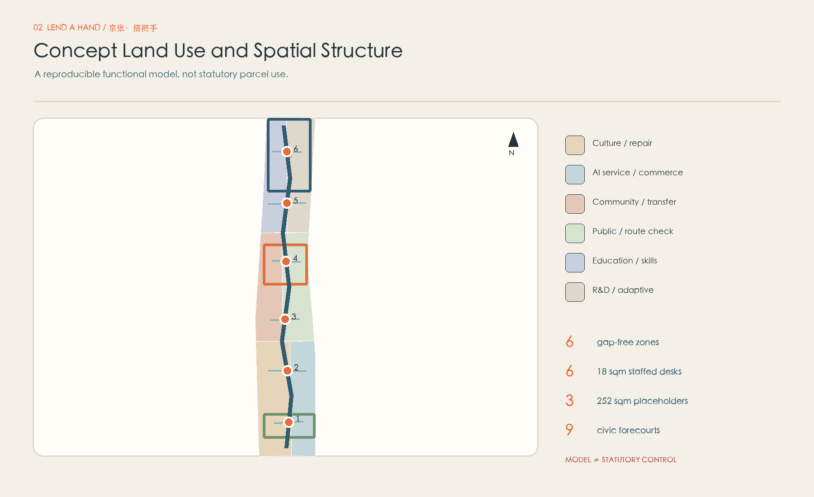
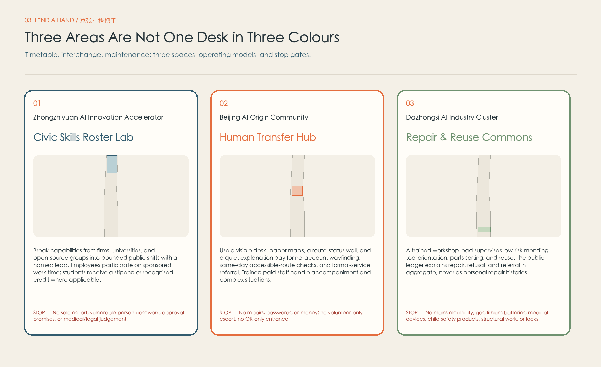
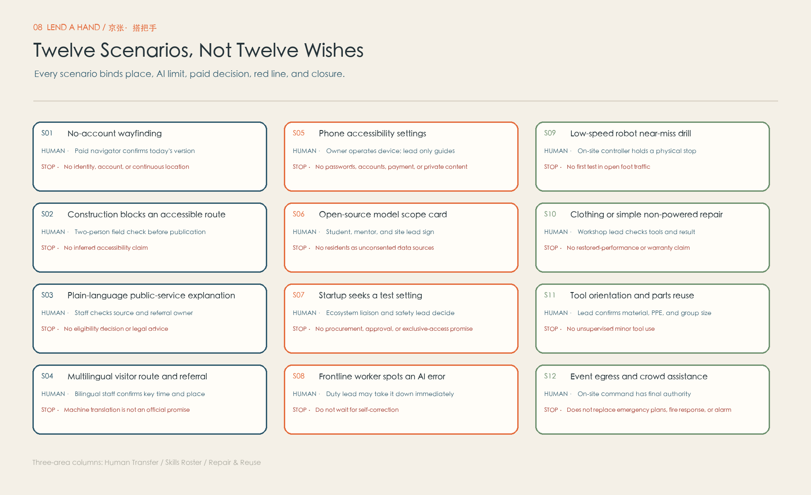

JING-ZHANG · LEND A HAND
Rail connects places; Lend a Hand connects responsibility: AI verifies and warns backstage while paid people judge and hand over at the front.
JING-ZHANG · LEND A HAND
A smarter city must not reduce help to a conversation between one person and a system. Public intelligence means every request knows who may receive it, how far that role extends, and when responsibility must return to a formal service.
A caregiver pushing a pram reaches construction fencing while the map still says “continue straight.” She does not need another download, nor should she be assigned to an enthusiastic neighbour with no training, insurance, or duty lead. She needs a visible human entrance: someone checks whether the route works today, draws a paper alternative, or hands responsibility to a formal owner when the situation exceeds the station's scope.
Lend a Hand is therefore neither a volunteer marketplace nor furniture placed in a park. It is a three-layer operating system: paid duty, bounded low-risk help, and formal-service interfaces. Six reversible staffed desks offer no-account entry. Three different landmarks turn skills timetabling, human interchange, and repair/reuse into place-specific civic infrastructure. Four backstage agents only verify sources/routes, flag risk, plan aggregate capacity, and edit public versions. Help is not a task assigned to a neighbour; it is an accountable relay with a boundary and an end.

Design Basis and Source List
The official announcement controls the three scope levels, three key areas, objectives, design tasks, and deliverable context. The agent taskbook supplies the agent-facing positions, functions, and six required tasks Source Source. Repository snapshots for urban design, regulatory planning, land-use classification, architectural depth, accessibility, generative AI, and ageing inclusion operate as review checklists. They do not turn a concept package into a statutory plan Standard.
Available SITE_BOUNDARY and KEY_AREA polygons are explicitly provisional rough geometry. They support generation, topology checks, and relational comparison, but they are not official parcel, road, heritage, or engineering redlines Spatial data Source. The cleared package lacks an existing-building survey, ownership, rail interfaces, street sections, utility capacity, heritage controls, approved planning parameters, and an accountable operator. All areas, ratios, placeholders, and routes are low-confidence design-model outputs that must be recalculated as a whole when official data arrives.
Safety and operations use primary sources as risk-routing prompts: Civil Code provisions signal the need to obtain advice on any applicable safety duties of place managers or activity organisers; the Personal Information Protection Law informs necessity and sensitive-information review; the Volunteer Service Regulation informs voluntariness, training, records, privacy, and protection Source Source Source. NYC311, Helsinki Service Map, and Repair Café contribute transferable mechanisms—multiple access channels, service status, accessible information, refusal, and capacity—but confer no Beijing authority. Two recent peer packages were read only as benchmarks for mapping, conditional interfaces, simulation ledgers, and stop measures; no copy or geometry was reused.
Three-Level Scope Framework
The same “help desk” is not repeated at three scales. The coordinated research area asks how AI-industry and university capabilities can become bounded public shifts without unpaid personal overtime. The overall design area asks how six physical entrances form an accessible, handover-ready, rollback-ready relay along daily routes. The key areas test three different verbs: capability departs, a person transfers, and an object or system is repaired. Rail connects locations; Lend a Hand translates timetable, interchange, and maintenance into civic responsibility Depth.
At the strategic level, a Civic Capability Supply Protocol requires firms to sponsor employee time, universities to provide supervision plus stipend or recognised credit where applicable, and open-source groups to accept only public and reversible tasks. At corridor level, one responsibility-relay walk links six 18 sqm reversible desks and three adaptive-reuse interface placeholders. At key-area level, Zhongzhiyuan tests capability supply, AI Origin operates the primary human referral interface, and Dazhongsi tests repair and reuse. All share the same RAG scope, double paid staffing, data minimum, and stop authority.
Six desks are spatial capacity, not a promise that six stations open simultaneously. A fixed primary hub and scheduled pop-ups open only when two trained paid people are present, paper and digital versions match, and the current formal-referral sheet is valid. Otherwise the interface visibly shows closed status and the nearest formal channel. One coordinator may not cover two stations, remotely double as safety lead, or fill sick leave with a volunteer [assumption:A-STAFF-001].

Taskbook Mapping and Regional Collaboration Interfaces
Lend a Hand answers the taskbook before extending its own concept. The three positions are review lenses rather than slogans: the cultural belt tests whether historical translation is restrained; the urban-AI experience belt tests whether people without smartphones can enter; the fusion-innovation belt tests whether a prototype can be safely refused, stopped, and handed back Source Standard.
| Three positions | Visible response in this proposal |
|---|---|
| Century-old Jing-Zhang Cultural Belt | Translate timetable, interchange, and maintenance into an accountable civic language; attach nothing to heritage fabric before verified controls. |
| Urban AI Life Experience Belt | Six no-account human entrances keep AI verification backstage and paid people responsible for explanation, refusal, referral, and stopping. |
| AI Fusion Innovation Belt | Turn public problems into reversible scope cards, closed validation, human approval, knowledge return, and exit—not an open test bed. |
Each of the five functions is mapped through function, district/wing, spatial carrier, package, backstage agent, human owner, and entry-to-exit loop. The two wings are taskbook roles, not newly asserted statutory boundaries or established organisations.
| Five functions | Primary district/wing | Spatial carrier | Pkg | Backstage agent | Human accountability | Entry-to-exit loop |
|---|---|---|---|---|---|---|
| AI full-stack autonomous innovation | Zhongzhiyuan AI Innovation Accelerator | Civic Skills Roster Lab / closed drill yard | LH-05 | A1 source verifier + A2 risk sentinel | Sponsored shift mentor + safety lead | Public task intake → scope card → closed validation → documentation handover or withdrawal |
| World-class AI innovation ecosystem | AI Origin Community + Zhongguancun Technology Service Wing | Human Transfer Hub / ecosystem relay desk | LH-07 | A3 capacity planner + A4 public-version editor | Ecosystem liaison + formal receiver | Problem definition → maturity screen → accountability check → non-procurement referral |
| AI+ scenario enablement | Xiaoyuehe Scenario Enablement Wing + all three districts | Scenario intake / closed or semi-open validation bay | LH-04/05 | A1 route verifier + A2 risk sentinel | Scenario owner + safety owner | Application → data review → human gate → result return → closure |
| Intelligent AI-vital city | Dazhongsi AI Industry Cluster + Xiaoyuehe Scenario Enablement Wing | Repair & Reuse Commons / accessible public-experience route | LH-01/06 | A4 plain-language editor | Paid navigator + qualified workshop lead | No-account experience → low-risk participation → professional referral → routine maintenance |
| Global voice in AI governance | Zhongzhiyuan + AI Origin Community | Public RAG scope card / version and stop archive | LH-02/08 | A2 risk sentinel + A4 version editor | Privacy owner + independent review chair | Publish failure, override, refusal, and exit evidence; never self-certify |
The collaboration structure closes only through accountable handover: public problem/capability enters → two-person scope and data check → closed or semi-open validation → human approval/refusal → versioned knowledge return → handover, reuse, or exit. Zhongguancun Technology Service Wing focuses on problem, engineering, capital, and service interfaces; Xiaoyuehe Scenario Enablement Wing focuses on controlled settings and public experience; the three districts retain distinct responsibility for capability supply, human transfer, and repair/reuse. Missing owner, permission, or exit conditions stop the loop at intake.
Five external areas: an interface map, not a partner list
Beiwei Community, Future Science City, Huairou Science City, Beijing E-Town, and Beijing-Tianjin-Hebei come from the taskbook review criteria. This package has no agreement, contact, data licence, joint event, or funding evidence. The table therefore defines what could be exchanged and how a future relationship would enter and exit through an open process; naming is not evidence of collaboration.
| Area | Potential capability | Two-way exchange | Entry condition | Knowledge return | Exit condition | Public evidence status |
|---|---|---|---|---|---|---|
| Beiwei Community | Everyday community issues, offline access, and plain-language feedback | Public issue cards, no-account experience scripts, and error returns | Open call followed by joint confirmation from community/scenario and safety owners | De-identified issue list, adopt/do-not-adopt reasons, and a plain-language public version | Exit for personal casework, unconsented data, or no formal receiver | Named in the taskbook; this package found no agreement or verifiable joint project |
| Future Science City | Research capacity, talent development, and prototype-maturity methods | Scope-card templates, closed-validation records, and topics for short talent exchange | Only after an open invitation defines both owners and the data boundary | Reproduction note, failure conditions, and maintenance/offboarding manual | Exit when data cannot be licensed, results reproduced, or accountability handed over | Named in the taskbook; conceptual interface only, with no collaboration claim |
| Huairou Science City | Experience in scientific-facility and research-scenario validation methods | Publicly shareable validation methods, non-sensitive scenario issues, and safety checklists | Verify public sources first; professionals then decide whether a local closed rehearsal is appropriate | Method-difference note, non-transferable items, and Jing-Zhang adaptation record | Exit when non-public research, facility permission, or unavailable expertise would be required | Named in the taskbook; no project, facility, or data-access promise |
| Beijing E-Town | Industrial engineering, manufacturing/robot testing, and maintenance problems | Closed-test protocol, near-miss record, physical stop, and handover template | Discuss entry only after maturity, site accountability, insurance, and physical stopping all pass | Test result, red-line events, and a human decision on the next maturity stage | Exit when first testing needs open crowds, lacks a physical stop, or could be misread as procurement | Named in the taskbook; no firm list, pilot, or procurement claim |
| Beijing-Tianjin-Hebei | Cross-regional exchange of talent, cases, components, and public-service knowledge | Bilingual scope cards, reusable-component notes, and versioned failure cases | Accept reusable material only through public channels and a clear licence | Source, licence, contextual difference, return contact, and exit state | Exit for unclear licence, irreproducible claims, or regional-commitment framing | Named in the taskbook; no joint mechanism, funding, or common project is presumed |
Coordinated Research Area: Industry and Future City Research
AI ecosystems are commonly measured in compute, models, capital, and exhibition space. This proposal adds a missing infrastructure: translating everyday limits, errors, accessibility barriers, language difficulty, maintenance demand, and human override into safe public tasks. Firms receive no resident-data mine; they receive authorised, de-identified, stoppable test settings. Residents receive more than a temporary demonstration: they see a human entrance and a formal handover. Industrial value comes from more reliable systems, not from turning a neighbourhood into a cheap test bed Depth.
Four relationships make the ecosystem credible. Firms and universities sponsor paid civic-skill shifts for device accessibility, plain-language public information, and open-source scope cards. Frontline workers can remove a wrong version, and their override enters product review as evidence. Formal-service recipients receive only the necessary request category and status, not unconsented profiles or unstructured case histories. A qualified repair operator links reuse materials, skills learning, and professional referrals; refusing a high-risk object counts as a quality result.
The talent proposition is professional dignity rather than robots everywhere. Engineers validate inside explicit limits. Frontline knowledge carries named override power. Students do not backfill jobs through goodwill. International visitors receive human-confirmed multilingual information. Accessibility users are not test subjects; they co-determine whether a route is publishable. Public evidence includes refusals, referrals, pauses, expiries, and unresolved items, proving that an AI district can stop a system.
| ID | Backstage role | May do | Final human | Hard boundary |
|---|---|---|---|---|
| A1 | Source & Route Verifier | Compare public sources, dates, route versions, and field-check status | Paid navigator | Never fill a missing fact; expire stale information |
| A2 | Scope & Risk Sentinel | Flag RAG breaches, missing second checks, and prohibited objects | Duty/safety lead | A red flag triggers a human protocol; AI does not manage a person alone |
| A3 | Shift & Load Planner | Schedule only task category, aggregate capacity, and advertised skill shifts | Shift manager | No ranking of residents, volunteers, workers, or social value |
| A4 | Public Version & Easy-read Editor | Draft multilingual, easy-read, and paper-equivalent versions with citations | Content owner | Check time/place fields; archive overrides and previous versions |

Global AI Ecosystem Cases and the Eight-Input Loop
The six cases compare public mechanisms only. They are neither a ranking nor evidence of collaboration with Jing-Zhang. Each row states institutional difference and non-transferable content so overseas brands, funding, and outcomes are not pasted onto a local concept.
| Public case | Place | Transferable mechanism | Institutional difference | Jing-Zhang fit | Do not transfer | Source |
|---|---|---|---|---|---|---|
| AI Singapore 100 Experiments | Singapore | Problem definition → PoC/MVP → engineers and apprentices deliver together → documentation and knowledge transfer | Its national programme and co-investment conditions differ; Jing-Zhang cannot copy funding levels or eligibility | Use maturity screening, real problems, staged deliverables, and handover in Zhongzhiyuan skills shifts and validation cards | Funding, procurement, programme duration, and admission eligibility | Source |
| Mila industry partnership ecosystem | Montréal, Canada | Research, talent, industry partners, and startup support maintain long-term connections in one collaborative environment | Research-institute scale, partner model, and local industrial policy differ | Use shared space, clear project intake, talent touchpoints, and continuity in AI Origin's ecosystem relay desk | Partner lists, brand, research reputation, and investment-attraction outcomes | Source |
| Vector Institute research-to-adoption | Toronto, Canada | AI engineering, talent programmes, and institutional collaboration move research toward adoptable tools | Its provincial research-industry network, funding, and health-sector partnerships differ | Use a research → engineering → training → adoption path for developer reuse and enterprise handover | Certification, grants, talent places, and industry partnerships | Source |
| Digital Catapult BridgeAI | United Kingdom | Maturity tools, accelerators, industry working groups, and responsible-AI support reduce adoption risk | It is a national programme with different target sectors and public-funding rules | Use maturity gates, ethics/data readiness, and pairing of industry problems with a developer community | Funding figures, sector eligibility, procurement context, and accelerator branding | Source |
| ELLIS network of units | Europe | Local research units, cross-node programmes, and a doctoral/postdoctoral network create multi-centre knowledge circulation | It centres research excellence and institutional commitment, not an urban public-service network | Let local nodes retain ownership while methods and talent circulate and knowledge returns | Unit status, admission criteria, reputation, and network endorsement | Source |
| AI Sweden Technology Infrastructure | Sweden | Partners bring use cases, complete agreements, receive technical/legal support, test, offboard, and share knowledge | It is a partner-based national platform with different infrastructure and legal conditions | Use case inventory, agreements before access, production-like tests, offboarding, and knowledge return | Partner privileges, compute supply, datasets, and legal conclusions | Source |
The transferable pattern is operational rather than stylistic: define the problem and maturity first; connect research, engineering, talent, and users through explicit roles; put data, compute, and capital behind agreements; judge reproducible outputs rather than attendance; and finish with knowledge transfer and offboarding. In Jing-Zhang, Zhongzhiyuan hosts closed capability validation; AI Origin hosts human explanation and responsibility transfer; Dazhongsi hosts bounded repair and AI-native services; Xiaoyuehe Wing hosts controlled scenarios; and Zhongguancun Wing hosts problem and professional-service interfaces. These are conceptual duties, not confirmed organisations.
| Eight inputs | Cross-area carrier | Human approval gate | Exit/stop |
|---|---|---|---|
| Land | Provisional three-district canvas and two conceptual wing interfaces | Show candidate relationships only; statutory/professional owners approve after title, planning controls, heritage, and redlines are complete | Do not locate an intervention when any critical base map is missing |
| Space | Zhongzhiyuan closed drill yard → AI Origin human transfer → Dazhongsi low-risk workshop → Xiaoyuehe semi-open scenario | Move from closed to semi-open to time-limited public use only when the scenario and safety owners sign each step | Close when staffing, egress, accessibility, or site agreement fails |
| Industry | Conceptual problem intake in Zhongguancun Technology Service Wing plus validation capacity across three districts | Accept only tasks with a problem owner, maintainer, and exit plan; make no investment or procurement promise | Return work with no business owner or that depends on residents as unpaid test subjects |
| Capital | Budget packages for wages, venue, insurance, testing, maintenance, and offboarding | The accountable body confirms each funding source; capital supports approved stages but cannot bypass human gates | Stop when full-cost coverage is missing, paid roles are replaced by volunteers, or funding is exchanged for data/procurement |
| Talent | Sponsored engineer shifts, mentored student contributions, paid frontline staff, and accessibility co-review | Confirm task, mentor, pay/stipend/credit, portfolio evidence, and handover/exit | Stop without supervision or compensation terms, when service users become training material, or when hiring is promised |
| Compute | Isolated sandboxes and traceable versions; no existing capacity is claimed | A technical owner sets accounts, quota, logs, deletion, and offline rehearsal for approved tasks only | Do not connect when access, cost, rollback, or deletion on exit cannot be verified |
| Data | Public, synthetic, de-identified, minimum-necessary data; personal information stays out by default | A privacy owner checks source, purpose, licence, duration, access, deletion, and result disclosure | Exit the ordinary pathway for unclear source/licence, continuous location, or free-text personal cases |
| Scenario | Four industry validation cards plus twelve public scenarios | Application → maturity → risk → closed test → human review → limited opening → return or closure | Stop for a missed red line, irreproducible result, or publicity that frames a scenario as approved |
One loop connects the eight inputs: land/space due diligence → dual definition of industry problem and public value → talent and full-cost budget confirmation → compute/data agreements → closed scenario validation → human evidence review → limited opening or exit → documentation, maintainer, and deletion proof handed over. Capital cannot bypass safety. Compute and data have no automatic public-space access. Exiting with reusable knowledge is as valid as scaling Depth.
Overall Design Area: Urban Renewal and Regulatory-Plan-Level Urban Design
The structure is one responsibility-relay walk, six verified short links, six staffed desks, three area-specific landmarks, and four backstage agents. The line is not a proposed road; it is a conceptual relationship awaiting street and accessibility surveys. Each desk is a reversible 3 × 6 m interface. Each landmark is an 18 × 14 m adaptive-use placeholder. The total building placeholder is about 864 sqm: 108 sqm for six desks and about 756 sqm for three interfaces. Geometry therefore matches the promise of a small public interface rather than drawing a hall and calling it a table Spatial data Metric.
Six gap-free conceptual zones use recognised classification terms for culture/repair-reuse support, AI services/community commerce, community service/human transfer, public space/route verification, education-research/civic skills, and R&D/adaptive use. These are functional relations, not statutory parcels. Green, public forecourts, routes, and building footprints are auditable overlays. No invented “AI land” code replaces planning classification Spatial data Standard.
Renewal starts with continuous walking, accessibility, shade, lighting, physical wayfinding, egress, and a human counter. Reversible desks, paper-map cabinets, route walls, and rest places come next. Limited digital services follow. Building adaptation or long lease comes last. Without surveys of buildings, title, structure, fire safety, and heritage, no demolition, FAR, storey, height, or parking claim is made. Retain-renovate-demolish decisions follow safety/title, carbon/memory, reversible adaptation, professional review, then approval—not an AI-generated massing image Depth.
Movement logic requires same-day paper/digital synchronisation, two-person field checks after construction changes, no obstruction of fire access, tactile paths, clear width, or station forecourts, and physical stop control in closed or semi-closed robot drills. Municipal and new-infrastructure needs—safe power, shutdown, lighting, storage, network fallback, fire controls, and weather protection—remain a due-diligence list, not an assumed capacity Spatial data Depth.

Detailed Design of Key Areas
The three key areas combine different space, operations, and accountability rather than three colour themes.
| Area | Core space | Landmark | Unique action | Explicit exclusion |
|---|---|---|---|---|
| Zhongzhiyuan AI Innovation Accelerator | Civic Skills Roster Lab | Skills Timetable | Break capabilities from firms, universities, and open-source groups into bounded public shifts with a named lead. Employees participate on sponsored work time; students receive a stipend or recognised credit where applicable. | No solo escort, vulnerable-person casework, approval promises, or medical/legal judgement. |
| Beijing AI Origin Community | Human Transfer Hub | Human Interchange | Use a visible desk, paper maps, a route-status wall, and a quiet explanation bay for no-account wayfinding, same-day accessible-route checks, and formal-service referral. Trained paid staff handle accompaniment and complex situations. | No repairs, passwords, or money; no volunteer-only escort; no QR-only entrance. |
| Dazhongsi AI Industry Cluster | Repair & Reuse Commons | Repair Ledger Wall | A trained workshop lead supervises low-risk mending, tool orientation, parts sorting, and reuse. The public ledger explains repair, refusal, and referral in aggregate, never as personal repair histories. | No mains electricity, gas, lithium batteries, medical devices, child-safety products, structural work, or locks. |
Zhongzhiyuan's Civic Skills Roster Lab combines open worktables, a public scope-card wall, a closed drill yard, and a visible timetable. Each shift publishes task category, can/cannot statements, shift lead, capacity, duration, and exit. Employee participation occurs on sponsored work time; student participation requires supervision and stipend/credit where applicable. It handles device accessibility, plain-language information, open-source scope cards, and closed robot drills—not vulnerable-person cases. The Skills Timetable displays accountable capability, never personal performance ranking Spatial data.
AI Origin's Human Transfer Hub is the primary referral node. A visible counter sits on the main desire line, with a quiet explanation bay, paper maps, route-status wall, and current formal-service contact sheet. It opens with one paid navigator and one duty/safety lead; it closes when staffing is single, contacts expire, paper versions diverge, or egress is obstructed. Only trained paid staff may accompany a person, and only within public visible range and a defined shift radius. The Human Interchange cannot replace people with a screen; open/closed, queue, referral, and duty owner stay visible Spatial data.
Dazhongsi's Repair & Reuse Commons includes locked tools, clean material sorting, a low-risk bench, an isolation/refusal bay, and an aggregate ledger wall. Clothing and simple non-powered objects may proceed under supervision. Amber objects require a second decision. Mains electrical, gas, lithium batteries, medical devices, child-safety items, structural objects, and locks are refused and referred. A liability waiver cannot replace reasonable control. The Repair Ledger Wall publishes aggregate repair, refusal, and referral reasons, never a personal repair file Spatial data.

AI Innovation Ecosystem, Personas, and AI+ Scenarios
Personas are not commercial segments. Each tests whether the interface shifts risk unevenly. The six descriptions use situation, need, equivalent physical channel, decision owner, and non-negotiable limit; no identifiable profile or ranking is created Depth.
| ID | Person | Immediate task | Physical support | AI/human relationship | Do not cross |
|---|---|---|---|---|---|
| P01 | Older resident who prefers offline help | Find a route usable today or understand a notice | Paper map, seated explanation, take-away query code | AI drafts or checks public sources; paid staff decide. | No password, money, private contact, home visit, or eligibility decision. |
| P02 | Wheelchair, pram, or low-vision traveller | Verify an accessible link after construction changes | Field-checked status and a human alternative | AI drafts or checks public sources; paid staff decide. | No password, money, private contact, home visit, or eligibility decision. |
| P03 | Caregiver with a child | Needs clear directions without separation or secluded escort | Help in visible range; no childcare | AI drafts or checks public sources; paid staff decide. | No password, money, private contact, home visit, or eligibility decision. |
| P04 | Frontline public-service worker | Flag a system error and withdraw a stale version | Authority to stop publication and record the override | AI drafts or checks public sources; paid staff decide. | No password, money, private contact, home visit, or eligibility decision. |
| P05 | Student or open-source developer | Place a prototype in a bounded public test | Public scope card plus academic and site-lead sign-off | AI drafts or checks public sources; paid staff decide. | No password, money, private contact, home visit, or eligibility decision. |
| P06 | Startup or campus test engineer | Find a real but reversible validation setting | Closed drills first; pilot does not imply approval | AI drafts or checks public sources; paid staff decide. | No password, money, private contact, home visit, or eligibility decision. |
Twelve scenarios cover wayfinding, accessibility, public information, language, device settings, open-source scope, industry testing, rollback, robot near-miss drills, low-risk repair, tool education, and event egress. Each binds one primary place, a backstage AI role, a paid final decision, data minimum, red line, and success/stop result Metric.
| ID | Scenario | Primary place | AI only | Paid human gate | Data/red line | Success or stop |
|---|---|---|---|---|---|---|
| S01 | No-account wayfinding | Human Transfer Hub | Source and route verification | Paid navigator confirms today's version | No identity, account, or continuous location | A usable route or clear referral |
| S02 | Construction blocks an accessible route | Human Transfer Hub | Flag conflict and request field check | Two-person field check before publication | No inferred accessibility claim | Stale version removed and paper map synced |
| S03 | Plain-language public-service explanation | Human Transfer Hub | Rewrite published material in plain language | Staff checks source and referral owner | No eligibility decision or legal advice | Visitor knows the next formal channel |
| S04 | Multilingual visitor route and referral | Human Transfer Hub | Draft a translation for review | Bilingual staff confirms key time and place | Machine translation is not an official promise | Teach-back confirmation and take-away note |
| S05 | Phone accessibility settings | Civic Skills Roster Lab | Offer generic device steps | Owner operates device; lead only guides | No passwords, accounts, payment, or private content | Setting changed or referred to official support |
| S06 | Open-source model scope card | Civic Skills Roster Lab | Structure data, capability, and failure conditions | Student, mentor, and site lead sign | No residents as unconsented data sources | Public can understand capability and limits |
| S07 | Startup seeks a test setting | Civic Skills Roster Lab | Match task category to aggregate capacity | Ecosystem liaison and safety lead decide | No procurement, approval, or exclusive-access promise | Closed drill or explicit refusal |
| S08 | Frontline worker spots an AI error | Across all three areas | Compare versions and propose rollback | Duty lead may take it down immediately | Do not wait for self-correction | Stale information removed within 15 minutes and logged |
| S09 | Low-speed robot near-miss drill | Civic Skills Roster Lab | Summarise trajectories and near misses | On-site controller holds a physical stop | No first test in open foot traffic | No red event released; one event stops test |
| S10 | Clothing or simple non-powered repair | Repair & Reuse Commons | Suggest material and generic steps | Workshop lead checks tools and result | No restored-performance or warranty claim | Safe return or written refusal/referral |
| S11 | Tool orientation and parts reuse | Repair & Reuse Commons | Suggest classification candidates | Lead confirms material, PPE, and group size | No unsupervised minor tool use | Traceable materials and capacity-bound session |
| S12 | Event egress and crowd assistance | Human Transfer Hub | Display verified exits and crowd alerts | On-site command has final authority | Does not replace emergency plans, fire response, or alarm | Drill closes under command and logs errors |
S02 shows the boundary in practice. Construction information enters the Source & Route Verifier as “field check required.” Two people inspect the public route without filming passers-by or recording a continuous trace. The duty lead first removes the stale digital version and marks the paper map, then publishes a checked alternative. If no safe alternative exists, the station says it cannot confirm a route today and refers the matter to the road/site owner. AI cannot invent the missing segment, and a volunteer cannot lead someone through construction.
S10 follows a different protocol. The owner remains present and describes the problem. The workshop lead classifies the object. Red is refused; amber proceeds only with tools, PPE, capacity, and competence; green invites the owner to take part. Completion does not promise “as new.” The lead checks obvious safety, explains residual risk, and records only aggregate object category/outcome. Injury, tool loss of control, unknown material, or an unsupervised minor stops the session and isolates the tool pending review.

Industry Validation Cards: A Scenario Must Be Refusable Before It Enters the District
The four cards separate industry validation from public experience. “Maturity” describes current evidence without assigning an unassessed TRL number. Every card is a conceptual validation path—not an approved, procured, or operating pilot.
| Card | Scenario | Current maturity | Closed/semi-open space | Input data | Accountability | Validation measure | Stop threshold | Result return |
|---|---|---|---|---|---|---|---|---|
| IV-01 | Same-day accessible-route verification | Rules/prototype can be rehearsed; no public service approved | Closed route tabletop plus semi-open, crowd-free sample segment | Public works notices, synthetic obstacles, and two-person field records; no continuous tracking | Road/site owner TBD + paid route-check team | Zero unverified routes published; target ≤15 min stale-version withdrawal drill; paper/digital version match | Stop after one inferred route is called usable, one red near miss, or one paper/digital conflict | Return route errors, override reasons, and applicability to the submitting team; take down if it cannot pass |
| IV-02 | Multilingual and plain-language public-information assistant | Controlled text tests are possible; not an official publishing system | Closed content desk plus a limited staffed counter | Authorised public notices, preset test questions, and glossary; no eligibility casework | Formal content publisher TBD + bilingual reviewer | Human-by-human match for critical time/place/accountability; source and expiry visible | Stop after one unchecked critical field, machine translation treated as a promise, or failed rollback | Keep error types, revision rules, and refusal examples; hand to the content owner or exit |
| IV-03 | Low-speed robot near-miss and yielding validation | Closed-rehearsal concept only; no qualification for open operation | Zhongzhiyuan closed yard; discuss a semi-open empty site only after conditions pass | Synthetic paths, anonymous device telemetry, dummies/signs; no first test on passers-by | Device operator TBD + on-site safety controller | Physical stop works; zero red events released; near miss, stop, and reset fully logged | Stop on one incursion into open footfall, failed emergency stop, facial-recognition dependency, or unclear authority | Return failure clips, version, environment, and non-generalisation notes; humans decide retest or offboarding |
| IV-04 | Shift-capacity and human-relay planning | Can be tested with synthetic rosters; never used to score people | Closed operations sandbox | Role skills, aggregate capacity, rest/substitution rules, and synthetic requests; no named value score | Shift manager + labour/privacy reviewer TBD | 100% compliance with two-person minimum, rest, and skills constraints; zero volunteer-replacement suggestions | Disable A3 on any personal value ranking, cross-site double duty, unpaid substitution, or unexplained roster | Return constraint conflicts, human overrides, and unresolved capacity; shorten hours or close when unmet |
All four share seven gates: the applicant states a public problem and maintainer; a scenario owner checks public value; privacy and safety owners review data and space; a closed rehearsal runs; frontline staff challenge failure conditions; the accountable body signs advance/rework/exit; and code, scope card, tests, errors, applicability, and deletion/offboarding proof return to the owning team. News, visits, or investment interest cannot replace these gates.
Land Use, Building Scale, and Retain-Renovate-Demolish Strategy
Land-use areas derive only from the provisional boundary in EPSG:4548. Six zones share edges without overlap and cover the design canvas. The green relay and nine civic forecourts are overlays. Buildings strictly distinguish six 18 sqm desks from three roughly 252 sqm adaptive interfaces. A public forecourt is a queue, rest, and transfer space around a desk, not the desk footprint. GeoJSON, metrics, drawings, and text all resolve to nine forecourts and nine building placeholders Spatial data Metric.
Architectural expression stops at urban-design and operating-interface depth. A desk must be reversible, closable, visible, weather-protected, able to hold paper maps, and allow side-by-side wheelchair use. An area interface should first seek suitable existing space rather than assume a new building. Before siting, each candidate needs title, structure, fire, egress, accessibility, lighting, noise, neighbour impact, heritage, equipment load, hygiene, and storage checks. The rectangles express an operating envelope, not a construction boundary Depth.
Retain-renovate-demolish decisions ask five questions: lawful and safe use; heritage/street/community-memory value; whether reversible adaptation meets access and operation; whether life-cycle carbon and cost favour reuse; and whether everyday impacts were reviewed with users. Missing evidence leaves the status unknown. Railway imagery is used in public language and responsibility structure; no facility attaches to a heritage object before official heritage boundaries are known.
Transport, Rail, Municipal Infrastructure, and Public Services
The responsibility relay is a walking/service logic, not a road centreline. Six short links conceptually connect public entrances, transit directions, and rest forecourts, but exact alignments require official street, rail, tactile-path, slope, crossing, construction, station-crowd, and ownership data Spatial data Depth. Route status has three classes: field checked, public source awaiting check, and currently unconfirmable. Only the first supports “usable today.” Paper and digital maps share a version and expire together.
Desk siting follows visibility without spectacle, seating and standing, side-by-side wheelchair space, no child separation, staff access to backup, and no obstruction of fire or tactile routes. Only trained paid staff accompany someone within a defined public visible radius, recording start/end node and outcome rather than a trace. No home entry, private-car transport, or personal contact exchange. Emergencies follow on-site emergency and call protocols immediately; they do not wait for AI triage.
Due diligence covers compliant power and shutdown, paper operation during network failure, lighting and closure, fire and egress, wet-weather safety, locked tools and inventory, material cleaning/isolation, accessible restrooms, refused waste, screen privacy, permissions, and daily open/close checks. “Lightweight” removes none of these duties. A venue with tables but no safety, storage, support, and closure capability may host explanation only—not repair or accompaniment.
Formal referral uses a minimum ticket: request category, station, time band, immediate-risk flag, receiving owner, receipt time, closure state, and version. Names, phone numbers, precise location, health/family detail, passwords, accounts, photos, and free-text histories remain out by default. Where contact is genuinely needed, the formal receiving service follows its own lawful process rather than turning the Lend a Hand ledger into a shadow case database [assumption:A-DATA-001].
Blue-Green Network, Public Space, and Urban Character
The blue-green system supports rest, legibility, and recovery rather than using a large percentage to mask weak site evidence. The concept model places an 18 m design buffer along the relay, six rest pockets, three key-area green islands, and nine forecourts. All require recalculation against official ecology, water, trees, sponge-city, heritage, and road data Spatial data Metric. The displayed ratio is a design-model output, not a statutory green-space ratio or a claim of new landscape delivery.
Public space is more than furniture. Each open node needs five layers: distant open/closed visibility; a service scope readable without scanning; seated, standing, and wheelchair explanation positions; a discreet handover position for amber/red requests; and a paper formal channel that remains useful after staff leave. Area landmarks add a unique interface: the timetable communicates time and capability; the interchange shows who receives the next leg; the ledger explains what was repaired, refused, or professionally referred.
Identity comes from railway operations rather than cyber-blue spectacle. Deep blue marks accountable continuity, orange marks a break requiring handover or repair, green marks recovery/rest, and warm paper keeps a daily scale. The symbol is an open handover, not a compulsory handshake, plus a discontinuous route: help may be refused, paused, or returned. Information hierarchy is fixed—open today, scope, duty person, stop, next formal channel—so promotion never precedes safety.
Accessibility follows two equivalent paths: high-contrast, legible physical text with paper, spoken, seated, and easy-read support; and a zoomable, keyboard-usable page tied to the same version. Accessibility law and ageing-inclusion policy are applicability checks. The proposal does not generalise one provision into a universal statutory human-service duty; no-account human access is a self-imposed public-design principle Standard.
Jing-Zhang Public Space, Landmarks, and Cultural System
The conceptual public space in Jing-Zhang Heritage Park is the Relay Stop Band. It is not an AI object attached to heritage fabric. On verified, lawfully usable public interfaces it combines reversible rest, a paper-map/version cabinet, open/closed beacon, side-by-side accessible explanation desk, and removable story marker. Until heritage fabric, controls, trees, water, title, and movement conditions are known, nothing attaches, drills, spans, or claims engineering feasibility Depth.
East-west stitching searches only for last-few-hundred-metre connections among existing lawful crossings, entrances, and forecourts, repairing information, rest, and human confirmation first. It makes no bridge, tunnel, underground, or rail-crossing feasibility claim. North-south continuity is the responsibility relay's status across a verified walking network—not a new road redline. Any unconfirmed segment breaks simultaneously on paper and digital versions and points to the next formal channel.
| Landmark | Place | Public role | Boundary |
|---|---|---|---|
| L1 Skills Timetable | Zhongzhiyuan | Shows contributable skills, shift lead, capacity, validity, and stop conditions like a timetable | No personal performance and no replacement for the belt Logo |
| L2 Human Interchange | AI Origin Community | Makes open/closed, duty person, queue, paper map, and next formal channel visible at distance | A screen cannot replace a person; no claim that service agencies are resident |
| L3 Repair Ledger Wall | Dazhongsi | Anonymously shows repair, refusal, referral, residual risk, and material destination | No personal-story wall and no repair-quality or warranty promise |
The Handover Honour Archive does not rank helpful people. It displays moments when someone stopped correctly: a frontline withdrawal of a wrong version, an explicit refusal, a closed referral, an accessibility co-review, or a complete offboarding record. Personal credit requires separate consent and contribution does not depend on being named. Corporate logos, rankings, resident stories, and unresolved outcomes stay out.
| Component | Name | Required public state |
|---|---|---|
| C01 | Open/closed beacon | Displays OPEN-GREEN, limited, or closed with a reason code at distance |
| C02 | Paper-map version cabinet | Keeps paper/digital versions, expiry, stale-version withdrawal, and offline alternative aligned |
| C03 | Side-by-side explanation desk | Supports seated, standing, and wheelchair users without forced across-desk confrontation or scanning |
| C04 | Quiet referral bay | Reduces exposure; handles minimum referral only and creates no shadow case file |
| C05 | Tool isolation box | Locks and numbers an abnormal tool/object immediately pending professional review |
| C06 | Version trace strip | Displays source, approver, validity, override, rollback, and next review |
The cultural storyline has three layers: Jing-Zhang railway memory contributes timetable, interchange, maintenance, and connection; Zhongguancun innovation culture contributes problem, prototype, reproduction, and openness; a new AI culture contributes source, human override, stopping, and handover. The result is not “technology answers people,” but “the city keeps a real person present for uncertainty.”
There is one belt-level Logo: two open hand-like brackets and an interruptible responsibility line. Cultural wayfinding is subordinate—area codes, timetable grids, version strips, maintenance stamps, and RAG status support navigation and storytelling. Wayfinding cannot become a second Logo, and the Logo cannot carry operational safety status.
Renewal Projects, Implementation Policy, and Phasing
Every spatial output is paired with an accountable owner, operator, prerequisite, and stop gate. “Co-creation” without an owner never enters Phase 1. A desk without paid duty stays closed. A tool cabinet without a qualified workshop lead stays locked Depth.
| Pkg | Project | Place | Physical output | Accountable owner | Daily operator | Minimum prerequisite | Continue/stop evidence |
|---|---|---|---|---|---|---|---|
| LH-01 | Physical human entrance | AI Origin | Six reversible 18 sqm desks and paper-map cabinets | Local public accountable body | Paid navigator + safety lead | Gate 0 owner/site/insurance pass | Continue only when spatial and operating evidence passes |
| LH-02 | Public RAG boundary card | All three | Entry board, tool labels, referral cards | Operator safety lead | Protocol editor | Gate 0 owner/site/insurance pass | Continue only when spatial and operating evidence passes |
| LH-03 | Paid shift and handover ledger | All three | Visible roster and internal handover sheet | Operator | Shift manager | Gate 0 owner/site/insurance pass | Continue only when spatial and operating evidence passes |
| LH-04 | Same-day accessible-route status | AI Origin | Status wall, paper map, verified short links | Road/site duty owner | Two-person field team | Gate 0 owner/site/insurance pass | Continue only when spatial and operating evidence passes |
| LH-05 | Sponsored civic-skills roster | Zhongzhiyuan | Open table, scope card, drill yard | Campus/university partners | Paid or sponsored lead | Gate 0 owner/site/insurance pass | Continue only when spatial and operating evidence passes |
| LH-06 | Repair and reuse commons | Dazhongsi | Locked tools, isolation bench, ledger wall | Qualified/professional operator | Workshop lead | Gate 0 owner/site/insurance pass | Continue only when spatial and operating evidence passes |
| LH-07 | Formal-service referral interface | AI Origin | Current contact sheet and closure status | Receiving service owner | Paid navigator | Gate 0 owner/site/insurance pass | Continue only when spatial and operating evidence passes |
| LH-08 | Public review and version archive | All three | Aggregate board, stop decisions, archive | Public accountable body | Independent review chair | Gate 0 owner/site/insurance pass | Continue only when spatial and operating evidence passes |
Annual Activities and Long-Term Conversion
The annual system is not six events on a calendar. Different rhythms maintain scope, routes, models, workshops, and international knowledge exchange. Every name is a proposed activity-IP direction; no organisation has adopted it, and no date, venue, host, budget, or registration is confirmed.
| Rhythm/IP | 中文 | Frequency/trigger | Participants | Accountability | Input | Verifiable output | Capacity | Stop |
|---|---|---|---|---|---|---|---|---|
| Q1 Scope Unboxing Week | 年度边界开箱周 | Annual opening; repeat after a taskbook or accountable-body change | Developers, operators, accessibility representatives, and potential problem owners | Independent review chair + privacy/safety owners, all TBD | Public problems, scope cards, and prior-year stop records | New can/cannot list, ownership gaps, and closed items | ≤24 per session; two paid facilitators | Reject intake when red lines, data, or accountability cannot be stated |
| Bimonthly Scope Card Foundry | 双月范围卡工坊 | Every two months when a verifiable scenario application arrives | Firm/university/open-source developers + scenario owner | Zhongzhiyuan mentor + scenario safety owner | Maturity self-check, data source, maintenance, and exit plan | Reproducible scope card/test plan or written refusal | ≤3 concurrent items; one maintainer each | Reject without problem owner, exit, or when procurement is implied |
| Q2 Route Truth Week | Q2 路线真话周 | Before works season and after a material route change | Paid route checkers, accessibility co-reviewers, and content owner | Road/site owner TBD; operator convenes | Public route information, paper map, and field checklist | Checked/pending/unconfirmable map plus error return | Approved short links only; two-person verification | Mark closed when a safe check is impossible, continuous tracking is needed, or no alternative exists |
| Q3 Human Override Drill | Q3 人工覆写演练 | Quarterly and after a major AI/version update | Frontline staff, developers, and formal-receiver observers | Safety lead + content owner | Injected faults, stale versions, and outage/absence scripts | Timed override, rollback, referral, stop, and repaired retest evidence | ≤12 per round; no real cases | One red-line miss, failed stale-version withdrawal, or absent owner returns to Gate 1 |
| Q3 Repair & Return Month | Q3 修补归还月 | Only when workshop gates pass and safe capacity exists | Object owners, qualified workshop staff, and reuse peers TBD | Workshop lead | Low-risk objects, tools/PPE, and refusal list | Anonymous repair/refusal/referral ledger and material destination | Limited by workstations and supervision | Close on a high-risk object, lost tool control, or absent professional lead |
| Q4 Global Handover Day | Q4 全球交接日 | After annual review when evidence can be safely published | Local/external developers and research, industry, and public-service observers | Public accountable body TBD + independent chair | Bilingual cases, failure/stop evidence, reusable components, and licences | Bilingual knowledge pack, next-year invite/do-not-invite list, and handover/offboarding decision | ≤80 onsite with no-account material; online uses public material only | Stop publication for a false implementation claim, unclear licence, or unconsented personal story |
Developer-community operations follow enter, contribute, reuse, and handover/exit—not chat-group retention. A public issue states problem, licence, data, and maintainer. A passed scope card opens an isolated sandbox. Every contribution carries a minimum reproduction, tests, failure conditions, version, and withdrawal note. Only maintainer acceptance registers reuse. Contributions with no maintainer, reproduction, or clear licence are thanked and archived rather than sustained through unpaid labour.
Scenario opening uses one application record: problem owner, public value, maturity, space class, data source, accountability, budget, insurance/safety, human approval, result return, and offboarding. An Agent does not score applicants. Scenario, privacy, safety, operations, and formal owners sign each relevant gate. A refusal says only “not entering now” and does not rank the applicant.
Public-experience maintenance covers open/closed state, paper/digital version, route checking, wayfinding legibility, seating/wheelchair positions, tool inventory, referral directory, complaints, and corrections. Each has an owner, frequency, and closure action. Promotion, developer events, and international visits cannot consume duty safety capacity; when both cannot run safely, everyday human access remains first.
| Audience | Entry | Contribution/validation | Conversion or exit | No promise |
|---|---|---|---|---|
| Developer | Public issue/event intake plus reproducible capability statement | Scope/licence → closed sandbox → code/tests/docs/failure samples | Maintainer accepts a reusable version or archives an explicit exit | Participation does not promise adoption, work, prize, or compute |
| Talent/student | Scope Unboxing or supervised shift | Bounded task with paid/stipend/credit terms confirmed first plus portfolio evidence | Take a verifiable portfolio; education/hiring uses a separate formal channel | No unpaid labour for vague opportunity; no hiring promise |
| Firm/problem owner | Problem, data status, business maintainer, and exit budget | Maturity screen → closed validation → human evidence review | Test pack returns; procurement/investment/partnership proceeds separately or stops | No policy, funding, procurement, venue, or exclusivity promise |
| External area/international peer | Public case, reusable method, or observer invitation | Licence/difference review → local reproduction → bilingual knowledge return | Adopt/do-not-adopt reason and next owner, or end when no relationship exists | Naming is not partnership; exchange is not implementation |
Annual budgeting covers twelve packages: paid roles; venue/property; insurance and professional review; reversible micro-retrofit; paper/digital synchronisation; two-person route checks; workshop tools/PPE; compute/sandbox; translation and access support; event safety; independent review; and offboarding. An event without a full-cost owner is not scheduled. Any conversion that trades resident data, volunteer substitution, or publicity claims for resources stops.
International communication: an invitation card that can travel and be challenged
| 中文 | English |
|---|---|
| 我们提供什么： 一套把AI放在后台、把人工判断放在前台的城市责任接力；公开范围、来源、失败、停止和交接。 | What we offer: an urban responsibility relay that keeps AI backstage and human judgement in front, publishing scope, sources, failures, stops, and handovers. |
| 我们邀请什么： 欢迎开发者、研究者、公共服务人员和社区实践者带来可公开、可许可、可退出的问题或方法，在封闭验证后共同留下双语可复用知识。 | What we invite: developers, researchers, public-service workers, and community practitioners may bring public, licensable, and stoppable problems or methods, then leave bilingual reusable knowledge after closed validation. |
| 证据状态： 几何为临时粗略底图；空间为概念占位；案例来自已登记公开来源；运营、伙伴、预算和成效均待确认或待试点。 | Evidence status: geometry is provisional and rough; spaces are conceptual placeholders; cases use registered public sources; operations, partners, budgets, and outcomes remain unconfirmed or pilot-only. |
| 我们不承诺什么： 这不是审定规划、开放服务、合作名单、招商政策、资金安排、采购结果或已落地项目。 | What we do not promise: this is not an approved plan, open service, partner list, investment policy, funding arrangement, procurement result, or implemented project. |
The international handover has four steps: Public evidence → Difference note → Closed local reproduction → Human handover, adaptation, or exit. Every step can stop; an unanswered invitation is never reported as a partnership.
Gate 0 (weeks 0–4) confirms the public owner, operator, venue rights, payroll and relief, insurance, legal, safeguarding, privacy, accessibility, fire, and formal receiving owners. One missing condition stops the process; there is no public recruitment. Gate 1 (weeks 5–8) is closed tabletop/field rehearsal only. All twelve scenarios plus abuse, stale rollback, staff absence, network failure, lost child, tool loss of control, and emergency-call tests must run before public service Depth.
Gate 2 (weeks 9–20) opens one double-staffed hub and a few scheduled pop-ups, initially for green requests. Repair opens only after separate tool, PPE, isolation, inspection, and insurance gates. Any missed red line, unresolved safeguarding event, volunteer substitution, missing paper equivalent, single-person opening, or stale-route failure closes the interface. Gate 3 (weeks 21–24) publishes aggregate evidence and convenes the owner, frontline staff, accessibility representation, operator, and independent chair to continue, amend, or stop.
Scaling ignores footfall and media reach. It looks at paid staffing delivery, red-risk interception, no-account completion, closed-loop referral, route freshness, workload, privacy samples, and funded cost. Unknown metrics remain unknown; targets are not results. Public invitations ask people to challenge scope, safety, staffing, and siting—never to provide case stories or volunteer before approval.


Metrics, Area Recalculation, and Compliance Matrix
Metrics have three statuses. Structural counts are known proposal facts. Spatial numbers are reproducible from provisional geometry but low-confidence in planning meaning. Operating, safety, labour, privacy, and cost evidence can only exist after accountability, agreements, and a pilot. Known, target, and unknown never share a column Depth.
| Class | Measure | Current | Definition | Confidence/time |
|---|---|---|---|---|
| Structure | Staffed relay desks | 6 | GeoJSON building-feature count | High; design count |
| Structure | Area-specific landmarks | 3 | Adaptive-interface count | High; design count |
| Content | Scenarios | 12 | Scenario-matrix count | High; text count |
| Content | Personas | 6 | Persona-matrix count | High; text count |
| Spatial | Provisional site area sqm | 11412825.386 | EPSG:4548 recalculation | Low; provisional boundary |
| Spatial | Concept green ratio | 0.036008 | Green union / provisional site | Low; design model |
| Spatial | Concept public-space ratio | 0.003634 | Nine forecourts / provisional site | Low; design model |
| Operations | Staffed-hours delivery | Unknown | Actual double-staffed hours / approved hours | After pilot |
| Safety | Red-request interception | Unknown; drill target 100% | Refused/referred red requests / all red requests | After drills |
| Referral | Closed-loop referral | Unknown | Receiving-owner confirmations / referrals | After agreements and pilot |
| Access | No-account completion | Unknown | Completed/referred without an account / eligible requests | After pilot |
| Labour | Volunteer-substitution incidents | Unknown; target 0 | Cases improperly shifted from paid/professional roles | After pilot |
| Privacy | Minimisation audit pass | Unknown | Samples without unnecessary identity/free text/location / samples | After privacy assessment |
| Cost | Operating cost per closed request | Unknown | Payroll + venue + insurance + tools + upkeep / closed requests | After budget and pilot |
The provisional site is 11,412,825 sqm, with a concept green ratio of 0.0360 and concept public-space ratio of 0.0036 Metric Metric. These numbers prove internal consistency—geometry exists, CRS recalculation works, ratios agree, and six desks/three landmarks match. They prove neither approval, venue availability, nor service effect. FAR, height, parking, utility capacity, and real operating cost remain unknown.
The compliance matrix covers announcement tasks, three scales, overall work, key-area work, and six agent tasks. The professional matrix covers nine repository standards; the design-depth matrix covers fifteen required items. “Addressed/complete” means an evidence chain exists in this package. It does not mean administrative approval, legal opinion, engineering review, or third-party certification. Qualified people and accountable bodies must re-evaluate applicability before implementation.

Risk, Copyright, and Compliance
The primary risk is not one wrong AI sentence; it is warm language hiding responsibility. Six hard limits follow: volunteers do not replace paid, statutory, or professional roles; minors and vulnerable adults are not assigned to an unaccompanied volunteer; red requests are neither matched nor attempted; repair refusal overrides social pressure; personal data is minimal and no-account by default; AI does not rank people or make final eligibility, priority, safety, diagnosis, legal, procurement, or emergency decisions [assumption:A-SAFETY-001].
| Level | Allowed/trigger content | Mandatory action |
|---|---|---|
| Green | Public information, paper maps, seated explanation, language/accessibility help, owner-operated device settings, supervised clothing or simple non-powered repair | Deliver within shift scope and record minimal event data |
| Amber | Field route checks, visible-range accompaniment by trained paid staff only, advanced tools, complex situations involving vulnerable adults | Safety lead makes a second decision; refer when capacity is absent |
| Red | Emergency care or diagnosis, legal/eligibility decisions, money transfer, passwords/accounts, home entry, childcare, private-car transport, private contact/photos, high-risk repair | Do not match or attempt; refer to emergency/formal services and open an incident record as appropriate |
Every open interface has two trained paid people. The public-facing role handles explanation, paper maps, green requests, and formal referral. The duty/safety lead controls amber decisions, red protocols, incidents, opening/closure, and stop authority. Volunteers, company partners, and students may share knowledge only in approved supervised low-risk shifts. They may not escort alone, triage cases, access private devices, receive money, enter homes, transport, photograph/contact privately, or command an incident. “No worker is available, so a volunteer will cover” closes the station [assumption:A-VOLUNTEER-001].
Default records contain request category, station, time band, outcome, referral state, and version only. Names, phone numbers, identity documents, health/family details, precise traces, photos, passwords, accounts, payments, and free text are not routine inputs. Situations involving children under 14, precise movement, health, or other sensitive information stay outside ordinary operation. Any future strict necessity requires separate lawful-basis, necessity, consent, access, retention, and deletion review. Paper is an equivalent formal path, not a degraded one.
Repair never uses a disclaimer in place of insurance and reasonable control. A qualified operator, locked tools, PPE, material isolation, capacity, guardian rules, output check, refusal/referral list, incident report, and stop authority are prerequisites. High-risk categories remain excluded. The concrete applicability of public-place, activity, volunteer, personal-information, and AI duties must be assessed by qualified local reviewers; citations route risks rather than certify compliance.
Text, coded geometry, figures, visual pages, and PDFs were independently generated by Codex under AmyLili28's direction from public sources and repository inputs. External cases are summarised only for mechanisms. No unauthorised corporate marks, portraits, interview quotations, or long copyrighted passages are used. Figures are deterministically drawn with Pillow; ImageGen is not claimed. COMMUNITY-DISPLAY-ONLY describes display permission for this submission and cannot override third-party rights.
Unified boundary: this is an agent-generated concept proposal, not an approved statutory plan. It does not represent approval, funding, employment, insurance, venue access, or service commitment by government, owners, operators, or communities. Every location, metric, role, hour, and procedure requires official data, site investigation, professional review, and confirmation by accountable bodies before implementation Depth.
References
1. Beijing Municipal Commission of Planning and Natural Resources, Haidian Branch, official Jing-Zhang AI Innovation Belt announcement Source. 2. Repository site package, source registry, agent taskbook, and provisional geometry Source Source. 3. Civil Code safety-duty provisions, Personal Information Protection Law, and Volunteer Service Regulation, used only for precondition/risk review Source Source Source. 4. NYC311, Helsinki Service Map, and Repair Café House Rules, used only for transferable access/status/low-risk operating mechanisms Source Source Source. 5. Public peer packages Jingzhang Commons Rail and Jingzhang Slow Line, used only as evidence and visual-quality benchmarks Source Source.